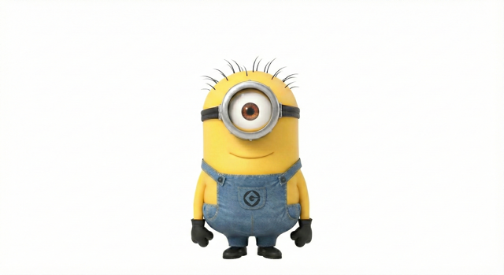
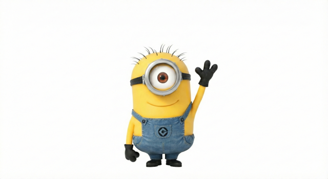

<!DOCTYPE html>
<html>
<head>
    <title>Audio-Visual Eye Tracking Experiment</title>
    <link rel="stylesheet" href="jspsych/jspsych.css"/>
    <script src="jspsych/jspsych.js"></script>
    <script src="jspsych/experiment.js"></script>
    <script src="jspsych/plugin-html-button-response.js"></script>
    <script src="jspsych/plugin-audio-keyboard-response.js"></script>
    <script src="jspsych/plugin-html-keyboard-response.js"></script>
    <script src="jspsych/plugin-initialize-camera.js"></script>
    <script src="jspsych/plugin-fullscreen.js"></script>
    <script src="jspsych/plugin-preload.js"></script>
    <script src="https://unpkg.com/@jspsych/plugin-webgazer-init-camera@2.1.0"></script>
    <script src="https://unpkg.com/@jspsych/plugin-webgazer-calibrate@2.1.0"></script>
    <script src="https://unpkg.com/@jspsych/plugin-webgazer-validate@2.1.0"></script>
    <script src="https://cdn.jsdelivr.net/gh/jspsych/jspsych@jspsych@7.0.0/examples/js/webgazer/webgazer.js"></script>
    <script src="https://unpkg.com/@jspsych/extension-webgazer@1.2.0"></script>
    <script src="jspsych/extensions/extension-mouse-tracking.js"></script>
    <script src="jspsych/extensions/extension-record-video.js"></script>
    <script src="jspsych/extensions/extension-webgazer.js"></script>
    
    <style>
        /* 시선 추적용 빨간 점 스타일 */
        #gaze-dot {
            position: fixed;
            width: 15px;
            height: 15px;
            background-color: red;
            border-radius: 50%;
            pointer-events: none;
            z-index: 9999;
            display: none;
        }
        
        /* 이미지 레이아웃 */
        .trial-container {
            width: 100vw;
            height: 100vh;
            display: flex;
            justify-content: center;
            align-items: center;
        }
        
        .image-left {
            width: 40%;
            height: 80%;
            object-fit: contain;
            margin-right: 5%;
        }
        
        .image-right {
            width: 40%;
            height: 80%;
            object-fit: contain;
            margin-left: 5%;
        }
    </style>
</head>
<body>
    <!-- 시선 추적 빨간 점 -->
    <div id="gaze-dot"></div>
</body>
<script>
    var jsPsych = initJsPsych({
        extensions: [
            {type: jsPsychExtensionWebgazer}
        ],
        on_finish: function() {
            // 실험 종료 시 JSON 형식으로 데이터 다운로드
            var data = jsPsych.data.get().json();
            var dataStr = "data:text/json;charset=utf-8," + encodeURIComponent(data);
            var downloadAnchorNode = document.createElement('a');
            downloadAnchorNode.setAttribute("href", dataStr);
            downloadAnchorNode.setAttribute("download", "experiment_data.json");
            document.body.appendChild(downloadAnchorNode);
            downloadAnchorNode.click();
            downloadAnchorNode.remove();
        }
    });
    
    // 현재 경로 확인
    console.log('현재 페이지 경로:', window.location.href);
    console.log('현재 디렉토리:', window.location.pathname);
    
    // 랜덤 숫자 생성 함수
    function getRandomInt(min, max) {
        return Math.floor(Math.random() * (max - min + 1)) + min;
    }

    // ========== 캘리브레이션 포인트 랜덤 선택 ==========
    var allPoints = [
        [10, 10], [10, 50], [10, 90], 
        [50, 10], [50, 50], [50, 90], 
        [90, 10], [90, 50], [90, 90]
    ];

    var selectedPoints = [];
    var pointsCopy = [...allPoints];

    for (var i = 0; i < 7; i++) {
        var randomIndex = getRandomInt(0, pointsCopy.length - 1);
        selectedPoints.push(pointsCopy[randomIndex]);
        pointsCopy.splice(randomIndex, 1);
    }

    console.log("선택된 캘리브레이션 포인트:", selectedPoints);

    // ========== 실험 자극 설정 ==========
    // 각 trial의 이미지와 오디오 경로 설정
    var trials = [
        {
            audio: 'assets/audio/biteabullet.mp3',
            image_left: 'assets/img/biteabullet1.png',
            image_right: 'assets/img/biteabullet0.png',
            correct_answer: 'p' // 'q' (왼쪽) 또는 'p' (오른쪽)
        },
        {
            audio: 'assets/audio/breakaleg.mp3',
            image_left: 'assets/img/breakaleg0.png',
            image_right: 'assets/img/breakaleg1.png',
            correct_answer: 'q'
        },
        {
            audio: 'assets/audio/cuttingcorners.mp3',
            image_left: 'assets/img/cuttingcorners0.png',
            image_right: 'assets/img/cuttingcorners1.png',
            correct_answer: 'q'
        },
        {
            audio: 'assets/audio/hitthesack.mp3',
            image_left: 'assets/img/hitthesack1.png',
            image_right: 'assets/img/hitthesack0.png',
            correct_answer: 'p'
        },
        {
            audio: 'assets/audio/Itsnotrocketscience.mp3',
            image_left: 'assets/img/Itsnotrocketscience1.png',
            image_right: 'assets/img/Itsnotrocketscience0.png',
            correct_answer: 'p'
        }
        // 더 많은 trial 추가 가능
    ];

    // ========== Preload ==========
    // 모든 이미지와 오디오 파일을 미리 로드
    var all_images = ['assets/img/smileMinion.png', 'assets/img/hiImage.png', 'assets/img/calibration.gif'];
    var all_audio = ['assets/audio/doorbell.mp3'];
    
    // trials에서 사용하는 이미지와 오디오 추가
    trials.forEach(function(trial) {
        all_images.push(trial.image_left);
        all_images.push(trial.image_right);
        all_audio.push(trial.audio);
    });
    
    var preload = {
        type: jsPsychPreload,
        images: all_images,
        audio: all_audio,
        continue_after_error: true,
        on_error: function(file) {
            console.log('파일 로드 실패:', file);
        },
        on_success: function() {
            console.log('모든 파일 로드 성공!');
        }
    }

    // ========== 환영 화면 ==========
    var welcome = {
        type: jsPsychHtmlButtonResponse,
        stimulus: function() {
            // 이미지 경로 디버깅
            console.log('이미지 경로:', 'assets/img/smileMinion.png');
            return `
                   <p>안녕하세요! Bello!</p>
                   <p>지금부터 들려오는 음성을 잘 듣고, 무엇을 말하는지 맞춰 보아요.</p>`;
        },
        choices: ['계속하기']
    }

    // ========== 카메라 권한 ==========
    var camera_permission = {
        type: jsPsychHtmlButtonResponse,
        stimulus: `
                   <p>진행을 위해 마이크와 카메라 접근을 허용해주세요!</p>`,
        choices: ['마이크/카메라 접근허용']
    }

    // ========== 전체화면 ==========
    var start_fullscreen = {
        type: jsPsychFullscreen,
        fullscreen_mode: true,
        message: `
        <p>원활한 진행을 위해 전체화면으로 전환합니다.</p>`,
        button_label: '전체화면'
    }

    // ========== 카메라 초기화 ==========
    var init_camera_trial = {
        type: jsPsychWebgazerInitCamera,
        instructions: `<p>얼굴을 화면 중앙에 맞춰주세요!</p>`,
        button_text: '계속하기'
    }

    // ========== 캘리브레이션 안내 ==========
    var calibration_instruction = {
        type: jsPsychHtmlButtonResponse,
        stimulus: `<p>이제 시선 추적 보정을 진행합니다.</p>
                   <p>화면에 나타나는 점을 따라 시선을 이동해주세요.</p>
                   <p><strong>빨간 점</strong>이 여러분의 시선 위치를 보여줍니다.</p>`,
        choices: ['시작하기']
    }

    // ========== 캘리브레이션 ==========
    var calibration = {
        type: jsPsychWebgazerCalibrate,
        calibration_points: selectedPoints,
        calibration_mode: 'view', // 'click'으로 변경하여 사용자가 클릭할 때마다 다음 포인트로 이동
        time_per_point: 2050,
        randomize_calibration_order: false,
        on_start: function() {
            // 빨간 점 표시
            document.getElementById('gaze-dot').style.display = 'block';
            
            // Doorbell 오디오 미리 로드
            window.doorbellAudio = new Audio('assets/audio/doorbell.mp3');
            window.doorbellAudio.load();
            
            // 첫 번째 포인트에서 소리 재생
            setTimeout(function() {
                if (window.doorbellAudio) {
                    window.doorbellAudio.play().catch(function(e) {
                        console.log('오디오 재생 실패:', e);
                    });
                }
            }, 100);
            
            // WebGazer 시선 추적 리스너 등록
            window.gazeListener = function(data, elapsedTime) {
                if (data) {
                    var gazeDot = document.getElementById('gaze-dot');
                    gazeDot.style.left = (data.x - 7.5) + 'px';
                    gazeDot.style.top = (data.y - 7.5) + 'px';
                }
            };
            
            if (typeof webgazer !== 'undefined') {
                webgazer.setGazeListener(window.gazeListener);
            }
        },
        on_finish: function() {
            if (typeof webgazer !== 'undefined') {
                webgazer.clearGazeListener();
            }
        }
    }

    // ========== 캘리브레이션 완료 후 빨간 점 숨기기 ==========
    var hide_gaze_dot = {
        type: jsPsychHtmlButtonResponse,
        stimulus: '<p>캘리브레이션이 완료되었습니다!</p>',
        choices: ['다음'],
        on_start: function() {
            document.getElementById('gaze-dot').style.display = 'none';
            if (typeof webgazer !== 'undefined') {
                webgazer.clearGazeListener();
            }
        }
    }

    // ========== 실험 안내 ==========
    var experiment_instruction = {
        type: jsPsychHtmlButtonResponse,
        stimulus: `<p>이제 본 실험을 시작합니다.</p>
                   <p>음성을 듣고 왼쪽과 오른쪽 이미지 중 하나를 선택하세요.</p>
                   <p><strong>왼쪽</strong>이 정답이면 <strong>Q</strong> 키를</p>
                   <p><strong>오른쪽</strong>이 정답이면 <strong>P</strong> 키를 눌러주세요.</p>
                   <p>음성이 끝난 후에 키를 눌러주세요.</p>`,
        choices: ['시작하기']
    }

    // ========== 대기 화면 (2초) ==========
    var inter_trial_interval = {
        type: jsPsychHtmlKeyboardResponse,
        stimulus: '',
        choices: "NO_KEYS",
        trial_duration: 3000
    }

    // ========== 메인 실험 Trial ==========
    var trial_procedure = {
        timeline: [
            // 1. 대기 화면
            inter_trial_interval,
            
            // 2. 이미지 표시 + 오디오 재생 + 키 입력
            {
                type: jsPsychAudioKeyboardResponse,
                stimulus: jsPsych.timelineVariable('audio'),
                prompt: function() {
                    // timeline_variable을 함수 내부에서 가져와야 함
                    var current_trial = jsPsych.evaluateTimelineVariable('image_left');
                    var left_img = jsPsych.evaluateTimelineVariable('image_left');
                    var right_img = jsPsych.evaluateTimelineVariable('image_right');
                    
                    console.log('왼쪽 이미지:', left_img);
                    console.log('오른쪽 이미지:', right_img);
                    
                    return `
                        <div class="trial-container">
                            
                            
                        </div>
                    `;
                },
                choices: ['q', 'p'],
                response_allowed_while_playing: false, // 음성 끝난 후 응답 가능
                trial_duration: 10000, // 음성 끝나고 6초 대기 (음성 길이에 따라 조정)
                data: {
                    task: 'trial',
                    correct_answer: jsPsych.timelineVariable('correct_answer'),
                    image_left: jsPsych.timelineVariable('image_left'),
                    image_right: jsPsych.timelineVariable('image_right')
                },
                on_finish: function(data) {
                    // 정답 체크
                    data.correct = data.response === data.correct_answer;
                },
                extensions: [
                    {
                        type: jsPsychExtensionWebgazer,
                        params: {
                            targets: ['.image-left', '.image-right']
                        }
                    }
                ]
            }
        ],
        timeline_variables: trials
    }

    // ========== 실험 종료 ==========
    var experiment_end = {
        type: jsPsychHtmlButtonResponse,
        stimulus: `<p>실험이 종료되었습니다!</p>
                   <p>수고하셨습니다.</p>
                   <p>아래 버튼을 클릭하면 데이터가 다운로드됩니다.</p>`,
        choices: ['데이터 다운로드 및 종료']
    }

    // ========== 전체화면 종료 ==========
    var stop_fullscreen = {
        type: jsPsychFullscreen,
        fullscreen_mode: false
    }

    // ========== 타임라인 구성 ==========
    var timeline = [];
    timeline.push(preload);
    timeline.push(welcome);
    timeline.push(camera_permission);
    timeline.push(start_fullscreen);
    timeline.push(init_camera_trial);
    timeline.push(calibration_instruction);
    timeline.push(calibration);
    timeline.push(hide_gaze_dot);
    timeline.push(experiment_instruction);
    timeline.push(trial_procedure); // 메인 실험
    timeline.push(experiment_end);
    timeline.push(stop_fullscreen);
    
    // 실행
    jsPsych.run(timeline);
</script>
</html>
